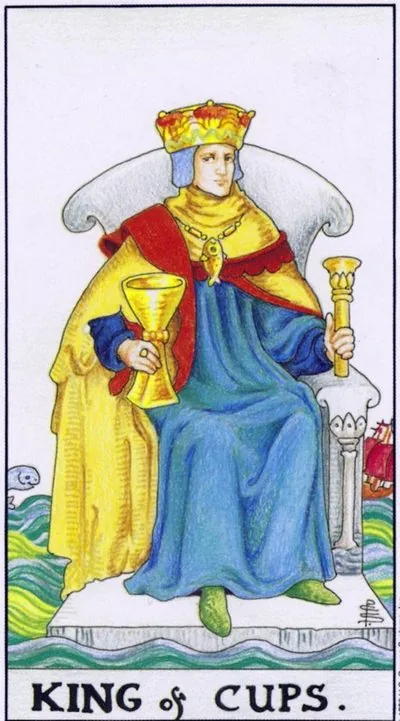

Младший аркан · Кубки
XIVКороль кубков
King of Cups
Король спокоен посреди взволнованного моря: власть над чувствами, мудрость сердца, щедрая твёрдость.
Архетип и основное значение
Трон плывёт среди бурного моря, но Король неподвижен: рука держит чашу ровно, волны высоки, рыба и корабль играют за спиной. Главная мысль рисунка Уэйта: мастерство не в том, чтобы убрать шторм, а в том, чтобы остаться собой внутри него. Огонь воли, управляющий водой чувств, — королевская алхимия Кубков.
Карта означает эмоциональную зрелость: человека, знающего свою ярость и нежность и не боящегося ни той ни другой, а потому никем не управляющего через них. Это дипломат, наставник, отец, умеющий сказать «нет» так, что отношения сохраняются. Он щедр без показухи и силён без демонстрации силы.
В быту
Роль якоря: семейный спор, который вы способны выслушать с двух сторон и развести без победителей и проигравших. Хороший день для серьёзного разговора с родителями и примирения родственников. Ваше спокойствие заразительно — пользуйтесь этим везде, где все повысили голос.
Работа и карьера
Пик управленческой зрелости: конфликтные переговоры, увольнения, претензии клиентов проходят через вас и не ломают. Вас слышат, когда говорите тихо. Отличное время менторства и медиации. Решайте по холодному расчёту сердца: учтите чувства сторон, но исход определяйте по сути.
Отношения
Взрослый роман: надёжность вместо качелей, глубина вместо спектаклей, уважение и честные разговоры о чувствах, включая неудобные. Одиноким — встреча с человеком зрелым и внутренне сильным, часто опытнее вас. Если это описание ваше — пора делать предложение.
Здоровье
Баланс: крепкое сердце физически и фигурально, ровное давление, стабильный фон настроения. Стресс вы перерабатываете быстро — опасно лишь копить его годами под маской «я в порядке». Полезна вода во всех видах; вредны молчаливое терпение и привычка тащить всех: даже королю нужен берег.
Эзотерическое значение
Адепт стихии Воды: огонь духа, усмиривший океан эмоций, мастер, служащий чувствам без порабощения ими. Карту используют в ритуалах мира, освящении наставничества, работе с гневом через принятие. Высший урок масти: сила не в том, чтобы не чувствовать, а в том, чтобы чувствовать всё — и выбирать, как действовать.
Море вошло в тронный зал: снаружи невозмутимость, внутри буря; чувства стали инструментом давления.
Архетип и основное значение
Король неподвижен, но спокойствие стало фасадом: под короной — непрожитые бури. Первый лик — манипулятор, точно знающий, куда нажать, чтобы человек сделал нужное «по собственной воле»: холодность как наказание, вина как инструмент, любовь как валюта. Второй — слабый король: бесконечно понимающий и неспособный ни к чему обязывающему; топит всех, кто за него держится.
Карта означает незрелость в позиции власти: начальник, играющий в любимчиков; отец, наказывающий молчанием; партнёр, решающий всё настроением. Она предупреждает и о внутреннем разладе — когда разум говорит одно, чувства другое, а тело уже болит от несоответствия. Зов карты — не дисциплина против чувств, а честный договор с ними.
В быту
Климат зависит от невидимой руки: обиды подаются как забота, решения принимаются молчанием, потом звучит «я же говорил». Если это стиль близкого — называйте вещи словами, спокойно и при свидетелях. Если узнаёте себя — найдите, где вы давите на чувство вины вместо прямого разговора.
Работа и карьера
Опасен руководитель-манипулятор или хаос немых решений: сегодня одно, завтра противоположное — правят настроения, логика бессильна. Документируйте договорённости и не входите в эмоциональные игры: там проигрыш обеспечен. Своя версия риска: решения висят месяцами, потому что страшно кому-то не понравиться.
Отношения
Холодная война или тирания мягкости: партнёр наказывает дистанцией, включает великолепного спасителя при желании контроля, за безупречным фасадом возможна измена. Если носитель вы — задайте главный вопрос: чего вы добиваетесь любовью, а чего страхом? Ответ определит будущее отношений точнее прогнозов.
Здоровье
Под фасадом растёт давление: гипертония, сердечные боли при полном «я спокоен», ночные приступы тревоги, отрицаемые днём. Подавленный гнев не исчезает — он переезжает в сосуды. Нужен безопасный выход: сопротивление в спорте, письменная ярость без адресата, терапия. Молчаливое терпение — самая дорогая привычка этой карты.
Эзотерическое значение
Извращённый адепт Воды: знание течений используется, чтобы крутить чужими рулями, — внушение, привороты, игры в спасателя. Проведите аудит мотивов каждого «доброго дела»: ради человека или ради власти над ним? Настоящее владычество над стихией начинается с отказа управлять чужой волей — иначе вода спросит с должка.
🌿 Как школа читает этот ранг
Основная идея
Управляет эмоциями и мечтами. Он чувствует человека почти без слов и способен держать собственные эмоции под контролем.
Как проявляется
В отношениях — партнёр, понимающий намёки и предугадывающий желания. В работе — человек, ведущий других через настроение и доверие. В развитии — способность пользоваться эмоциональной энергией, не становясь её рабом.
Теневая сторона
Эмоциональная власть превращается в тонкую манипуляцию и управление чужими чувствами.
Ключевые слова
эмпатия · мечты · эмоциональная власть · интуиция · самоконтроль
📜 Развёрнуто — из лекции по рангу
Суть карты
человек, управляющий эмоциями — своими и вашими — и «управляющий нашими мечтами»: вода = будущее, итог всего; эмоция — непосредственное ощущение ситуации, интуиция без разума.
Прямое положение
- Отношения: мужчина, с которым можно говорить намёками — поймёт практически молча, потому что эмпат; прямое положение — «тот самый суженый-ряженый», муж, предугадывающий ваши мечты.
- Образы: Киану Ривз — всегда спокойный, показывает эмоции когда нужно и прячет когда нельзя (Джон Уик сорвался именно от обиды); Макконахи в «Настоящем детективе» — философ всеобщей любви, Рыбы напротив Девы-Харрельсона: две противоположности составляют сюжет; Том Харди («Табу» — принцип Рыб: то, что выкинуто из общества); Луи де Фюнес и Пьер Ришар — эмоции сразу на лице, добряк, «не может быть злым».
- Илон Маск — скорее король кубков: говорит о мечтах, о том, чего ещё нет (Марс, Starlink, Tesla как «машина мечты»); вводить людей в будущее умеют только кубки.
- Нептун: состояния изменённого сознания — кубки (шаман с отваром, гипнотизёры). Король состояние дозирует; кто выйти не может — уже паж, алкоголики — перевёрнутые пажи. Короли любят выпить, но скажут «спасибо, не хочу».
Негативное значение
• вашими эмоциями крутит как хочется — «так на вас посмотрит, что вам взгрустнётся»; сердцеед — вы в него влюблены, он это знает и пользуется (не альфонс: альфонсы по пажам и рыцарям); тонкий абьюз — эмоциональный вампир, издевается без единого прямого слова.
Акценты и фишки школы
- Голливудские типажи как тренажёр характеров: французская четвёрка — Депардье (пентакли), Бельмондо (жезлы), Делон (мечи), Луи де Фюнес/Пьер Ришар (кубки); шаблонные образы заходят легче многогранного Аронофски — шаблонность тут плюс.
- Метод контраста внутри одного сериала: «Настоящий детектив» — Дева и Рыбы, земля и вода.
- Личности: Джеймс Бонд — скорее король мечей; Тиньков лишь «пытается быть», зависим от ситуации — максимум королева; Маск уходит в кубки; Путин «не король, а царь» и явно мечи (ФСБ-силовики).
- Астрология без жёсткой привязки карта→знак: три знака делятся между четырьмя дворами; король пентаклей ближе Козерогу, чем Тельцу — «козероги более властны».
- Символика жезлов: саламандра-ящерица — дух огня, рождающийся из пламени; львы; подсолнух — солнечный символ защиты и верности. Полемика с тарологами, называемыми жезлами воздухом: в школе чётко жезлы = огонь, видно даже по окраске костюмов.
- Спорт и советские соцсоревнования — огонь: желание побеждать и вовлечь массы.
- Зависимости тянутся по Нептуну — кубковая тема; мечи — прямое насилие, кубки — эмоциональное давление.
- Честные отсутствия: Банцхаф, славянский ряд и здоровье как отдельная сфера на лекции не разбираются.
Ключевые слова
управляет эмоциями и мечтами; эмпат, понимает молча; суженый-ряженый; сердцеед.